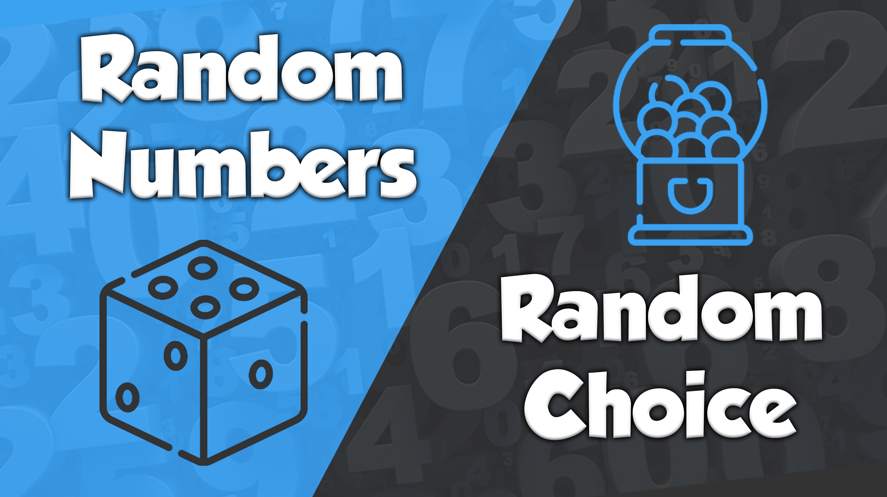

This site, created by Ennio Gualandi, is a site created to facilitate the various daily activities that can also be presented at school. Currently, there are three different sections that perform completely different functions. The first section is that of Random Numbers/Random Choice, the second is the Crypted Notepad while the last currently available is the notes of the various subjects. You can get more information about them by scrolling the page.
Welcome to Elathon

Random Generator

Elathon's Random Generator has 2 different generation types. The first type of generation is that of random numbers while the second is the random choice. You can find out more about them by going to the Random Generators section.
Crypted Notepad

Crypted Notepad is like a simple note, you will simply have more privacy options. As soon as the notepad is created, you can choose the date on which other people will be able to view the content or provide a key to access the notepad. If a user enters the link to the notepad page without having the access key or before the release date has arrived, they will only see random letters.
Subjects Notes

Subjects Notes is the section of Elathon where you can find notes on various subjects. The notes were written by students of a scientific high school. If you are behind with school this is the section for you to use wherever and whenever you want.